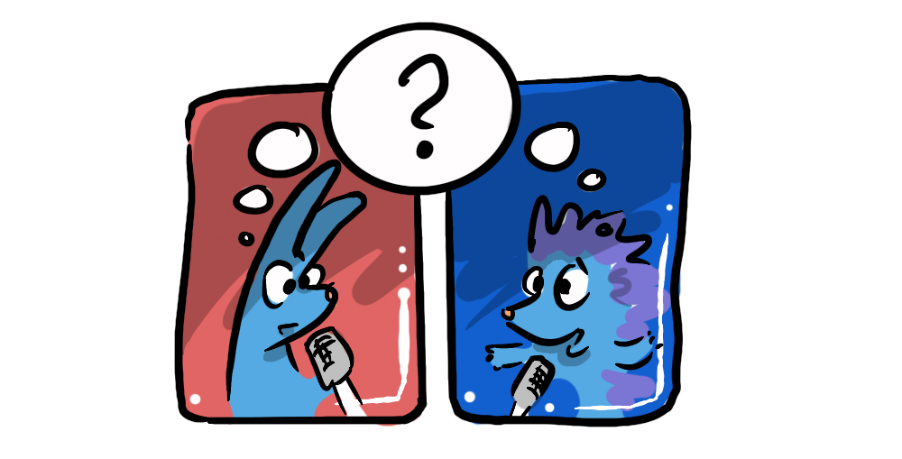
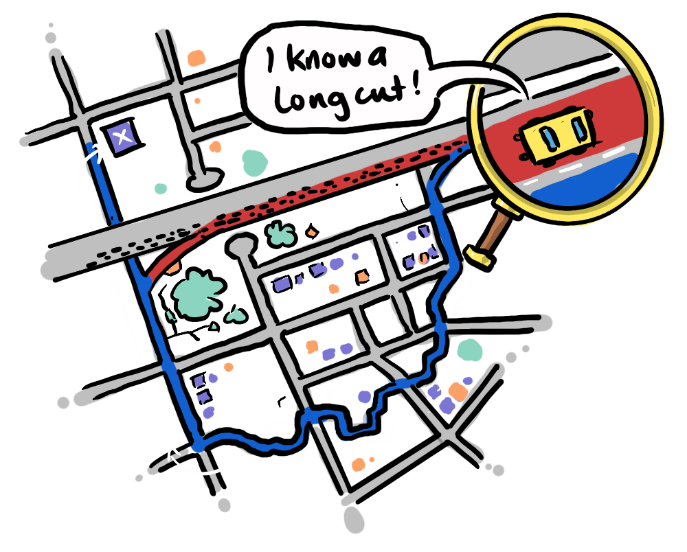
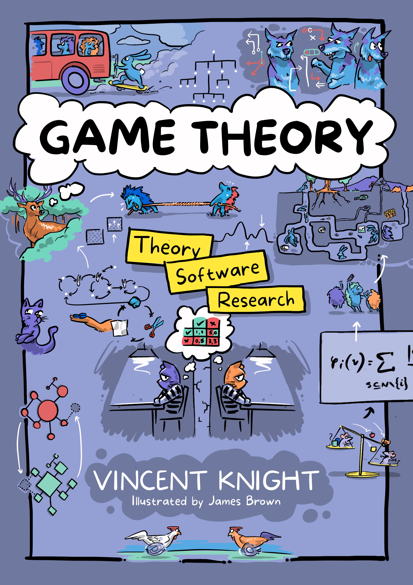

Our first interview on the Non-Zero-Sum James podcast—Game Theorist Vincent Knight and I got connected through Collaborative Corner, my ongoing invitation for like-minded people to get in touch, and I'm very glad he did.
Vince is a Professor of Mathematics at Cardiff University, we talk about what game theory actually is (and isn't), and his Axelrod project—an open-source Python library that's become one of the largest resources for running iterated Prisoner's Dilemma tournaments across the world.

One of my favourite tangents in the conversation is on Braess' Paradox—the counter-intuitive result that adding extra capacity to a network (a new road, say) can sometimes make the whole system slower, not faster. It's a lovely, if slightly maddening, example of how individually rational choices can add up to a collectively worse outcome.
Beyond the podcast, Vince and I are now collaborating on his upcoming Game Theory book, which I'm illustrating—largely with artwork already living on this site, getting a nice bit of dual-purpose life out of drawings you may already recognise. I've just finished the front cover:

Have a listen above, and if you've got expertise, a story, or just something interesting to say about win-win games in your corner of the world, get in touch via Collaborative Corner—Vince won't be the last guest.